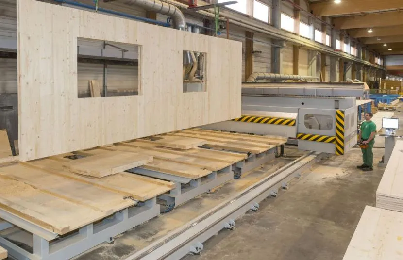
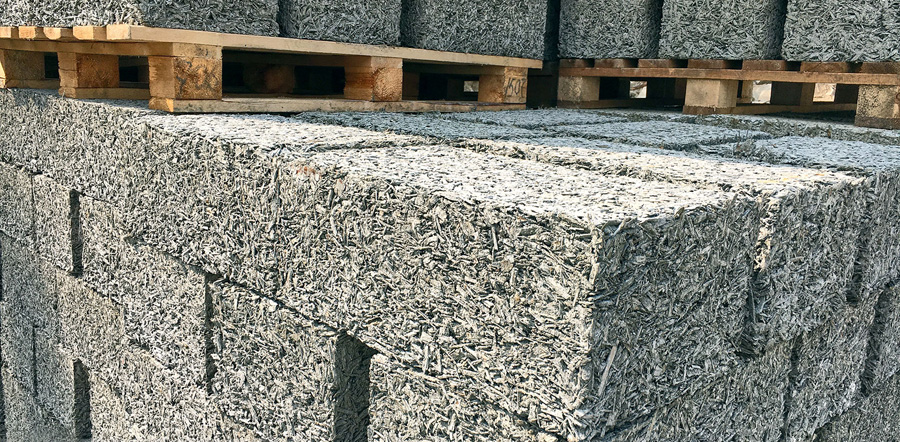
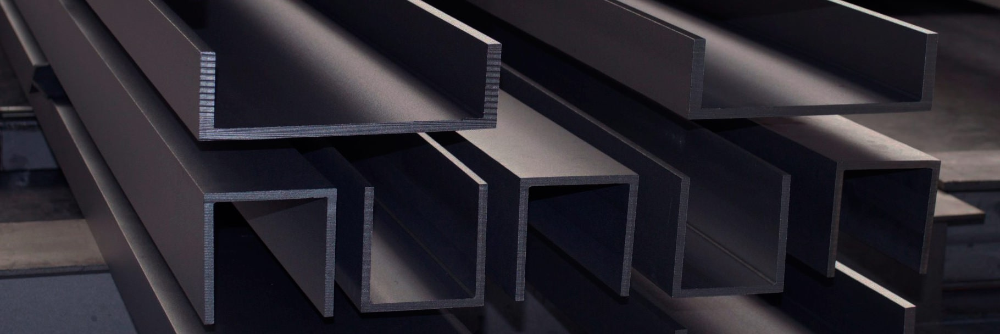
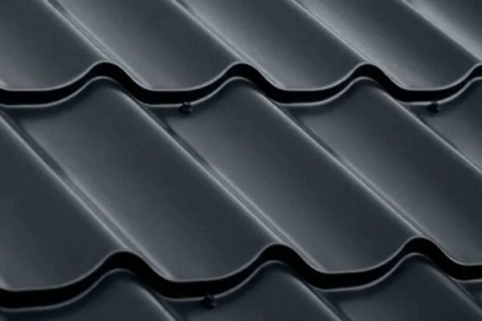

Представляют собой панели из склеенных под прессом деревянных досок. Они экологичны и просты в монтаже. Но стоят дорого и в России применяются недавно. Эстетичный внешний вид позволяет обойтись без отделки. Пока нет данных о долговечности этого материала.

Этот тип материала является массовым и менее дорогостоящим, чем предыдущий. Дробленый камень не отличается декоративностью и сложностью форм, и используется, в основном, как инертный заполнитель бетонов, или как дорожный щебень.

Другое название — древобетон. Он прессуется в блоки из дерева и цемента. Обладает хорошей паропроницаемостью. Пластичный материал не боится сдвигов почвы (не дает трещин). Требует надежной изоляции от осадков с внешней стороны.

Такой камень используется для внешней и внутренней отделки зданий и сооружений. Объекты, при строительстве которых используется облицовочный камень, неизменно восхищают своей величественностью и выразительностью. В облицовке зданий, набережных, мостов, декоративном оформлении улиц, аллей, парков и скверов такой камень помогает добиться ощущения целостности архитектурного ансамбля и общей гармоничности окружающей среды.

Это особый вид металлопроката – отличительной особенностью швеллера является П-образная форма поперечного сечения. Производится такой вид продукции методом горячей прокатки и применяется при возведении опорных и несущих металлоконструкций, сооружении колонн и перекрытий, при строительстве мостов и эстакад.

Металлочерепица является одним из лидеров по популярности и соответствию вышеперечисленным факторам. Мы производим материал из высококачественного стального листа с полимерным покрытием, благодаря чему усиливаются защитные и эксплуатационные качества. В статье мы расскажем все о металлочерепице: интересные факты, особенности и выбор материала.